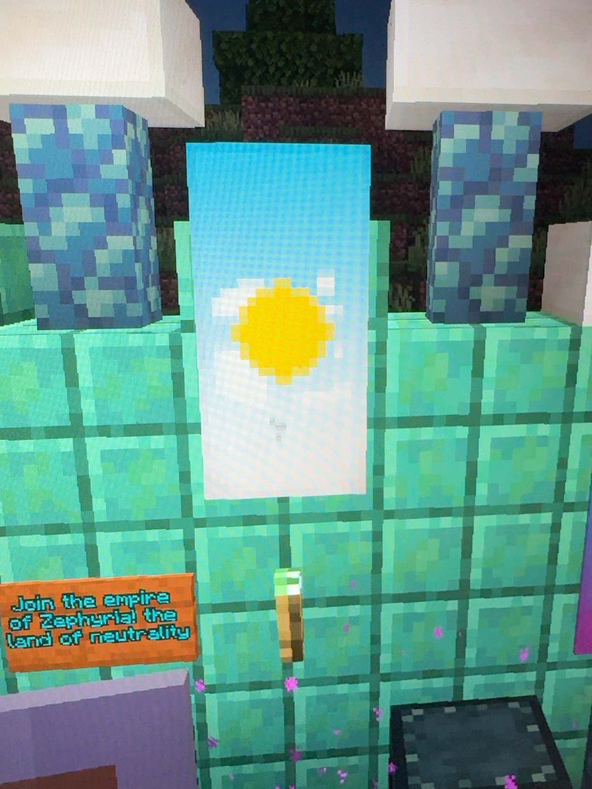

Empire Identity
Land of Neutrality.
OFFICIAL EMPIRE PROFILE
Land of Neutrality
An empire built around friendship and working together. Founded by King Jack, Zephyrial is part of the history and future of the Royal Crimson SMP.

THE EMPIRE
The Zephyrial Empire is one of the kingdoms of the Royal Crimson SMP. Its history includes an alliance with Reigm and a hope for renewed friendship.
Land of Neutrality.
King Jack founded the Zephyrial Empire.
“Friendship and Working Together.”
A new ruler is expected to be appointed. The successor's name has not yet been confirmed. The ruler will choose the Zephyrial Army commander.
The Zephyrial Army serves the empire. Its commander is chosen by the ruler.
Zephyrial territory includes land over water and floating structures. Its capital has not yet been confirmed.
The official flag is a white banner with a golden-yellow sun in the center. It was designed by another group member. The meaning of the symbol has not been confirmed.
THE PAST
A conflict that changed the relationships between the kingdoms of the Royal Crimson SMP.
During the Great War, Zephyrial allied with the Reigm Empire against Endoria.
Both allied empires were eventually forced to retreat. There was no winner.
Reigm and Zephyrial have not spoken to each other for years, even though both would like to restore their relationship.
A NEW BEGINNING
The Reigm Empire and Zephyrial Empire are planning a joint peace festival called The Festival of Two Crowns.
The festival is intended to help restore the relationship between the two empires after years of silence following the Great War.
Further details about the festival have not yet been confirmed.
THE FUTURE
With new leadership expected and the possibility of renewed friendship with Reigm, the next chapter of the Zephyrial Empire has yet to be written.